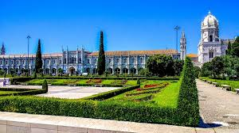

Mosteiro dos Jerónimos, Lisboa.
O Mosteiro dos Jerónimos, em Lisboa, é um dos monumentos mais emblemáticos de Portugal e um exemplo impressionante do estilo arquitetônico Manuelino, que floresceu no século XVI durante o reinado de Dom Manuel I. Ele está localizado no bairro de Belém, à beira do rio Tejo, e foi construído para comemorar a viagem de Vasco da Gama à Índia, em 1498, além de servir como um local de oração e descanso para os navegadores portugueses.
História
A construção do mosteiro começou em 1501, e foi concluída em 1601, mas o projeto passou por várias fases de ampliação e modificações ao longo do tempo. O mosteiro foi inicialmente fundado por Dom Manuel I, que, em 1496, decidiu criar uma casa religiosa para a Ordem de São Jerônimo. Esse mosteiro também foi concebido para ser um local de sepultura para membros da família real portuguesa e para outros personagens ilustres da época. Durante muitos séculos, o Mosteiro dos Jerónimos foi um importante centro de religião, cultura e educação em Portugal. Ele se manteve ativo até 1833, quando foi desconsagrado após as reformas liberais e as mudanças nas ordens religiosas, o que também resultou na dissolução da Ordem de São Jerônimo. Em 1983, foi classificado como Patrimônio Mundial da Humanidade pela UNESCO.
Significado Cultural
O Mosteiro dos Jerónimos não é apenas um símbolo da arquitetura portuguesa, mas também uma representação da era dos descobrimentos e da exploração marítima. A sua construção foi financiada, em parte, pelas riquezas adquiridas com o comércio de especiarias, especialmente após as viagens de Vasco da Gama para a Índia, um marco para Portugal e para o mundo.
Arquitetura
A arquitetura do Mosteiro dos Jerónimos é um dos maiores exemplos do estilo Manuelino, uma variação do Gótico tardio, com elementos renascentistas e islâmicos. Alguns dos aspectos mais notáveis incluem:- Claustro: O claustro do mosteiro é uma das partes mais impressionantes. Com colunas decoradas e um trabalho minucioso de pedra, ele é um espaço tranquilo e repleto de detalhes simbólicos e decorativos,incluindo representações de animais e plantas, além de elementos náuticos, que fazem referência aos descobrimentos portugueses.
- Igreja de Santa Maria de Belém: A igreja do mosteiro é também uma grande atração. O seu interior apresenta altíssimas abóbadas e uma rica decoração, com destaque para o túmulo de Vasco da Gama,que repousa ali. Outro ponto importante é o túmulo de Luís de Camões,autor de "Os Lusíadas", épico que celebra os feitos dos navegadores portugueses.
- Portal Principal: A fachada do mosteiro é uma das mais notáveis no estilo Manuelino, com intrincados detalhes de pedra, incluindo motivos marítimos como cordas, âncoras e esferas armilares, ue simbolizam o Império Português e suas grandes navegações.